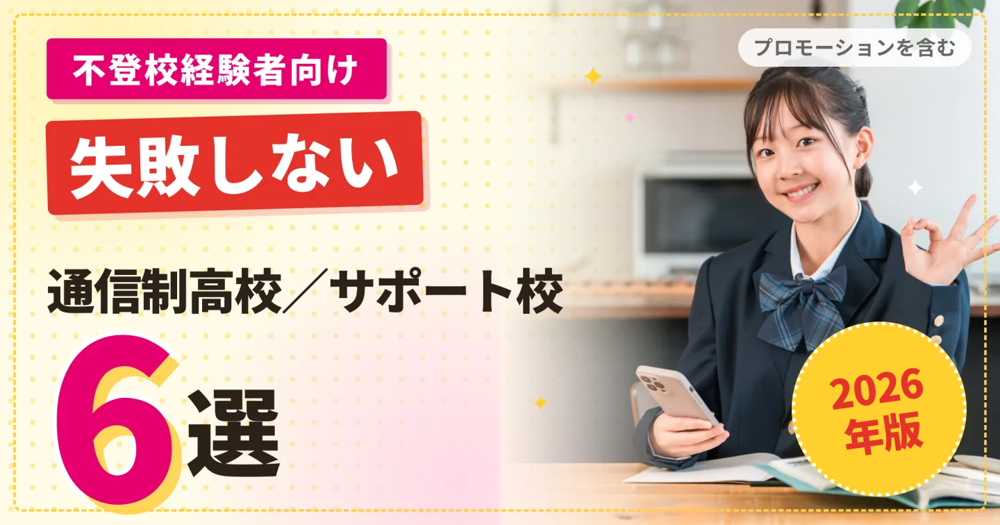
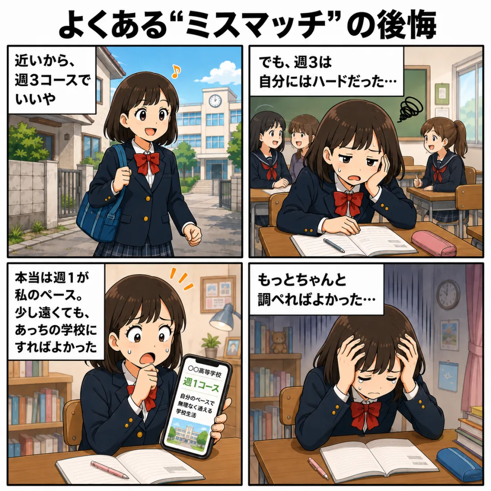
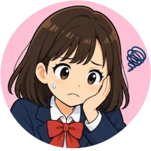
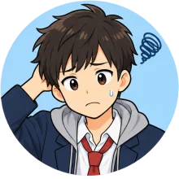
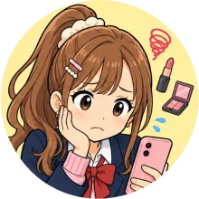
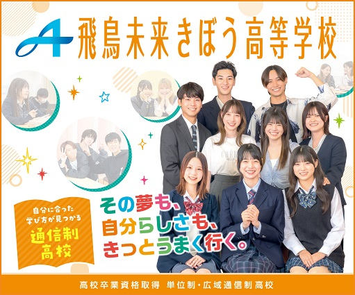
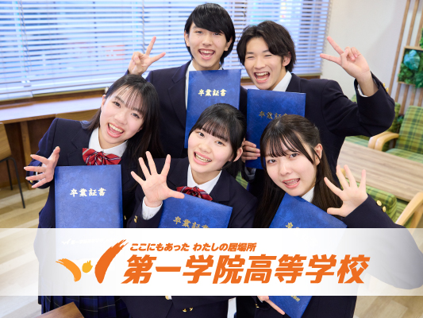
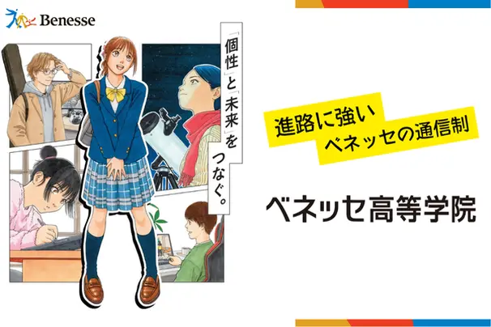
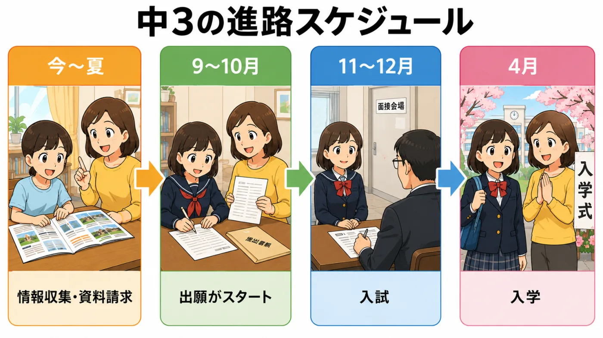
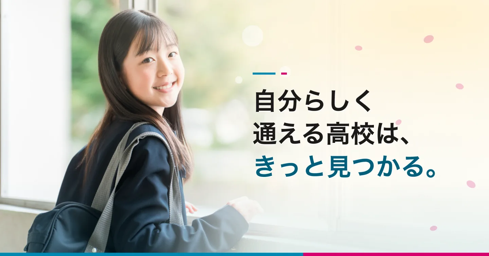

画面をタップで閉じる／指を広げてさらに拡大できます

子供が不登校になると、大きく不安を抱えますよね⋯
「不登校のうちの子でも通える高校を探してあげたい」
そう思ってネットで情報収集をしていませんか？
家から近いからここでいいかな
学費が安いからここでいいかな
その探し方、かなり危険です。
通信制高校で後悔する一番の原因は、じつは学校の良し悪しではありません。
「自分の希望」と「学校の特色」が合っていなかった——いわゆる“ミスマッチ”です。


ネットの情報だけで決めたけど、入学したら印象が全然違った…

1校しか資料を取らなかった。他と比べれば、もっと合う学校があったかも…

適当に普通コースに入ったけど、自分の興味は美容の専門コースだった⋯
こうした後悔の多くは、“もっと調べていれば”防げたものです。
家からの距離やイメージだけで決めず、通学ペース・コース・サポートまで見比べておくことが、後悔しない選び方につながります。
とはいえ、通信制・サポート校は学校ごとに特色がまったく違います。だからこそ、自分に合うかを見極めるポイントを知っておくことが大切です。
次の3つを押さえれば、ミスマッチはぐっと減らせます。
不登校のお子さんの場合、何より大切なのは「無理なく通い続けられるか」です。次の3つを必ず確認してください。
①HPだけで決めず、パンフレットも見たか
HPには載せきれない情報がパンフレットにはたくさん載っています。またキャンパスごとの違いもなかなかHPには載っていないことが多いです。
②通学ペースを「自分に合わせて選べる」か
週5〜在宅まで選べて、途中でコースも変えられる。体調に波があっても、無理なく続けやすい。
③サポートの「中身」が具体的か
担任制・個別指導・カウンセラーなど、支えの中身を具体的に説明できる学校を選ぶ。
ご紹介するのは、いずれも名の知れた大手教育グループが運営し、通学スタイルを選べて、サポートの中身も具体的な通信制高校・サポート校です。
それぞれの運営母体と特徴を見てみましょう。
通信制高校
運営：角川ドワンゴ学園（KADOKAWA・ドワンゴ）
サポート校
運営：トライグループ（家庭教師のトライ）

通信制高校
運営：三幸学園（大手専門学校グループ）

通信制高校
運営：ウィザス（総合教育サービス）
通信制高校サポート校
運営：KTC学園

サポート校
運営：ベネッセ
どの学校が合うかは、お子さんの状態やご家庭の事情によります。
1校だけで決めず、まとめて見比べるのが確実です。
とはいえ、1校ずつ調べて問い合わせるのは、正直かなり大変。
そんなときに役立つのが「ズバット通信制高校比較」です。
地域や「通学のペース」「サポート」「進学」などの条件を選ぶだけで、〈人気校の6校〉を含む複数校の資料をまとめて資料請求できます。
【完全無料・まとめて一括】
「ズバット通信制高校比較」で資料を取り寄せる
そして、早いものでもう夏も終わり。
9月には、多くの通信制高校で出願が始まります。
今すぐに、資料請求をして学校を比較する必要があります。

今や、毎年およそ31万人が通うようになった通信制高校。※文部科学省「学校基本調査」（令和8年度速報値）
人気のコースや学校には応募が殺到し、「定員オーバー」になる可能性もあるので、早めの資料請求をお勧めします。
わたしたち親が与えてあげられるのは、「未来への選択肢」くらいしかありません。
選択肢が多いうちに、選べる今が、資料請求のタイミングです。

やりたいこと・通学の頻度・お住まいの地域から、条件に合う通信制高校を探して、
まとめて資料請求できるサービスがあります。
費用はかかりません。まずは何校か資料を取り寄せて、運営母体・通学スタイル・サポート体制を見比べてみることから始めてみてください。
カンタン60秒無料で人気校の資料を一括請求する※資料請求後、学校から連絡が入る場合があります。気になる点は、その際に直接ご確認いただけます。
運営元について
ご紹介しているサービス「ズバット通信制高校比較」は、株式会社ウェブクルーが運営しています。
これまでに20万人以上が利用しています（※2025年10月現在）。
同社は、お客様から取得する個人情報を含むすべての情報について、情報セキュリティの国際規格「ISO27001（ISMS）」の認証を取得し、それに基づく管理を行っています。
お子様の進路にかかわる情報をお預けいただくことになるため、気になる方も多い点だと思い、記載させていただきました。
資料請求に費用はかかりません。
画面をタップで閉じる／指を広げてさらに拡大できます